Sweetness with a pulse. punk sticker controls, original AI wallpaper, colored display lettering and beads progress.
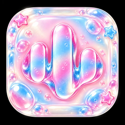
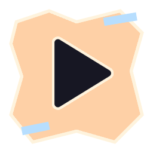
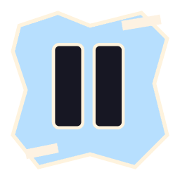
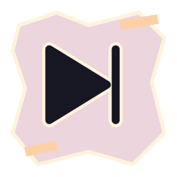
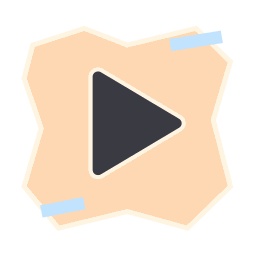
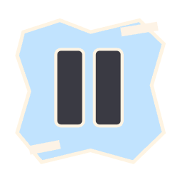
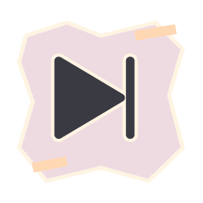
Actual transparent normal/pressed PNG assets. Input, playback and accessibility stay native.
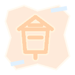
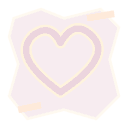
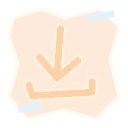
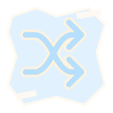
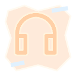
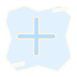
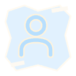
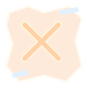
Beads seek and volume · native real-fraction decoration. Static browser specimens.
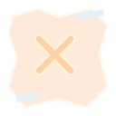
Native Material switch behavior; themed palette and thumb glyphs.
Installed display font: RubikBubbles · SIL Open Font License. Actual font specimen above; AI lettering and metallic text effects are not a TTF font.
Normal/pressed bitmap states + finite native scale/release feedback. Gel/sticker profiles use a spring; motion preferences win. No frame-sheet character animation.
Bounded native reveal profile: punk_sticker. Illustrated peel/shutter/comet effects on the AI concept board are art direction; the app uses scale/slide/fade, not a physical simulation.